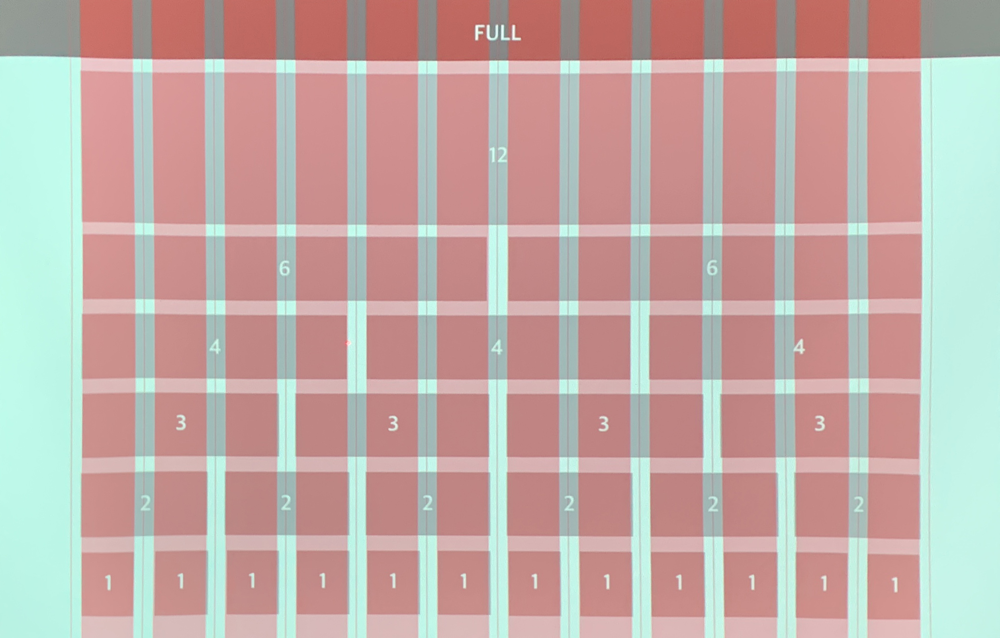

HTML 표현 방법
1. 속성없이 태그만으로 표현
2. Inline Style Sheet : 태그안에 CSS 코딩
3. Internal Style Sheet : head 부분에 stlye을 따로 코딩
4. class & ID (해당 문서에만 적용됨)
•class : 특수한 유형의 요소에 대한 스타일 정의
•ID : 하나의 특수 요소에 특정 스타일을 정의
5. Linking Style Sheet : style 파일을 따로 저장하고 불러오기 (여러개의 문서에 적용 가능)
CSS 적용 우선순위
1. !important (문법 체계를 어지럽히는 명령이므로 긴급상황 아니면 쓰지 말 것)
2. inline 선언 스타일 속성
3. 직접 선택해서 선언한 속성 (class name) => 구체적 선언이 우선
ex) 자손 선택 > 자신
4. 하향 우선 속성 (중복된 경우)
5. 부모에게 상속된 속성
6. 브라우저 기본 스타일
* 주기적으로 교체되는 부분은 따로 빼는 것이 나음 (우선선택자로 쓰지 말 것)
우선순위 연습
<stlye>
#black {color: green;}
.my-box .text {color: black;}
.black {color: red;}
.my-box .black {color: yellow;}
.black {color: blue;}
.good-black {color: red !important}
.good-black {color: green}
</style>
<body>
<div class="my-box">
<div class="text"> My Text 1 </div>
<div class="black"> My Text 2 </div>
<div id="black"> My Text3 </div>
<div class="good-black" style="color: orange;"> My Text 4 </div>
</div>
</body>
My Text 1
My Text 2
My text 3
My Text 4
상속/비상속
상속
color
cursor
font-family
font-size
font-weight
letter-spacing
line-height
text-align
text-indent (들여쓰기)
line-style
word-spacing
text-transform (대소문자)
visibility (보이는 상태 조건)
border-collapse (테이블 보더 병합)
border-spacing
caption-side (테이블 제목 위치)
비상속 요소
background
width
height
padding
margin
border
위치값 (top,bottom,left,right)
float
position
display (박스타입 지정)
overflow (내용넘침 설정)
vertical-align
z-index (보이는 순서)
CSS Box Model
모든 HTML 요소는 상자로 간주될 수 있음
디자인과 레이아웃의 용어로, 모든 HTML 요소를 둘러싸는 상자
마진, 보딩, 패딩 및 실제 내용으로 구성
요소 주위에 테두리를 추가하고 요소 사이의 공간을 정의
•내용 : 텍스트와 이미지가 나타내는 상자의 내용
•패딩 : 컨텐츠 주변의 영역을 지움 (투명함)
•보딩 : 패딩 및 내용을 둘러싼 테두리
•마진 : 테두리 외부의 영역을 지움 (투명함) / 음수값이 가능함

레이아웃 설계시 고려해야 할 것
⓵ contents의 크기
⓶ display 속성
⓷ position
테두리 및 여백
테두리
* 테두리(참고)
: style="border: 두께 종류 색상;" {border: width style color}
- dotted : 짧은 점섬 테두리
- dashed : 긴 점선 테두리
- solid : 실선 테두리
- double : 이중 테두리
- groove : 3D 그루브 테두리 (*3D 효과는 테두리 색상값에 따름)
- ridge : 3D 능선 테두리
- inset : 3D 삽입 테두리
- outset : 3D 시작경계 테두리
- none : 경계 없음
- hidden : 숨겨진 테두리
* 둥근 테두리 : style="border-radius: 7px;"
둥근 테두리
* 속기 방법
시계방향으로 : top → right → bottom → left {padding: top right bottom left;}
•{padding: 10px;} : 네방향 모두
•{padding: 10px; 0} : 위, 아래
•{padding: 0 10px : 양쪽
•{padding: 10px 20px;} : 위,아래 - 오른쪽,왼쪽
•{padding: 10px 15px 20px;} : 위 - 오른쪽,왼쪽 - 아래
원본
10
10
10
10 20
10 15 20
여백 (패딩 및 마진)
내용 + padding + border까지가 하나의 속성
width, height는 padding 값 포함 안됨
margin : 서로 중복될 때 큰 값으로 수렴
line-height : 내용과 패딩의 값이 모두 포함된 높이
img는 상하좌우 padding, margin 가능
* 응용 : width값 줘야함
- 가운데 정렬 : {margin: 0 auto;}
- 오른쪽 정렬 : {margin-left: auto}
box-sizing : 컨텐츠에 추가로 padding 값을 주면 원래 크기보다 늘어남
•content-box : 기본값
•border-box : 추가로 padding을 주더라도 전체 박스 크기는 늘어나지 않음
contents
border-box
content-box
CSS Background
background-color
backgorund-image : url( )
background-repeat : no-repeat, repeat-x, repeat-y
background-size : cover
background-position : 수평위치 수직위치
그라디언트 : cssgradient.io
backround-image : liner-gradient(각도, 시작rgba 위치값, 종료rgba 위치값)
CSS Flex Box
Flexbox 인터랙티브 플레이그라운드

플렉스 박스를 원하는 위치에 배치하는 것
여유 공간에 따라 너비, 높이, 위치를 자유롭게 변형할 수 있음
•flex container (플렉스 컨테이너) : 웹 문서에 요소를 플렉스하게 사용하려면 플렉스 컨테이너로 묶어줘야 함
•flex item (플렉스 항목) : 플렉스 컨테이너에 담기는 웹 요소
•main axis(주축) : 플렉스 컨테이너 안에서 플렉스 항목을 배치하는 기본 방향 / 기본적으로 왼쪽에서 오른쪽으로 수평방향
•cross axis (교차축) : 주축과 교차되는 방향 / 기본적으로 위에서 아래로 배치
플렉스 방향 지정하기
flex-direction : 플렉스 항목을 배치할 방향을 지정
•row : 주축을 가로로 교차축을 세로로 지정.플렉스 항목을 주축 시작점에서 끝점으로(왼쪽에서 오른쪽으로)
•column : 주축을 세로로 교차축을 가로로 지정. 플렉스 항목은 주축 시작점에서 끝점으로 (왼쪽에서 아래쪽으로)

플렉스 항목 줄 배치
기본적으로 플렉스 항목들은 주축방향을 따라 한줄로 배치 됨
flex-wrap : 여러줄에 걸쳐 표시 가능
•no-wrap : (기본값) 플레스 항목들을 한 줄에 표시
•wrap : 플렉스 항목을 여러 줄에 표시
•wrap-reverse : 플렉스 항목을 여러 줄에 표시하되 기존 방향과 반대로 배치

[항목 배치를 위한 속성들]
justify-content
플렉스 항목을 주축방향으로 배치할 때의 기준
•flex-start : 주축을 시작점을 기준으로 배치
•flex-end : 주축의 끝점을 기준으로 배치
•center : 주축의 중앙을 기준으로 배치
•space-between : 첫번째 플렉스 항목과 마지막 플렉스 항목을 시작점과 끝점으로 배치한 후 중앙 항목들을 같은 간격으로 배치
•space-around : 모든 플렉스 항목들을 같은 간격으로 배치

align-items
플렉스 항목을 교차축 기준으로 배치할 때의 기준
(여러 줄로 배치될 때의 배치 방법)
•strech : 플렉스 항목을 확장해 교차축을 꽉 채움
•flex-start : 교차축의 시작점을 기준으로 배치
•flex-end : 교차축의 끝점을 기준으로 배치
•center : 교차축의 중앙을 기준으로 배치
•baseline : 시작점과 글자 기준선이 가장 먼 플렉스 항목을 시자점에 배치하고, 그 글자의 기준선과 다른 항목의 기준선을 맞추어 배치

CSS Position
참고
•static
CSS로 특별한 값을 지정해 주지 않아도 적용되는 기본값이다.
HTML 파일에서 중첩되지 않은 여러개의 div를 작성하면, 위에서 부터 차곡 차곡 쌓이는 기본적인 형태이다.
•relative
한개의 div가 있고 relative로 설정할 경우엔 static과 큰 차이는 없다. 하위에 div가 있을 경우엔 하위의 div를 absolute 배열 할 수 있다.
•absolute
흔히 레이어라는 개념으로 알고 있는 값이다. div에 top, right, bottom, left 값을 지정해서 원하는 위치에 고정되게 띄울 수 있다.
•fixed
기본적으로 absolute와 같다. absolute는 canvas의 스크롤에 따라 올라가고 내려가지만 fixed의 경우는 스크롤에 상관없이 지정한 위치에 고정된다.
cf)
fixed : viewport를 기준으로 배치
absolute : 부모(=relative position 개체)가 기준
• 아무것도 없으면 body, 2개 이상이면 가까운 것이 부모가 됨

margin, padding은 static에 값을 주는 것
음수 값도 됨 ☞ Javascript 애니메이션 응용
viewport와 %의 차이
% : 스크롤을 제외한 안쪽 부분만을 100%로 인식 / 공간확보는 해놓아도, 컨텐츠 크기에 따라 작아질 수 있음
(☞해결 : min-width)
vh, vw : 스크롤까지 포함해 100%로 인식 / 지정한 만큼 공간을 확보해 놓음
응용 : 중앙정렬 고정 (fixed: left;)
⓵ 절반 값 직접입력 (display 절반 - (width÷2))
⓶ 50% : 정확하지 않음
⓷ calc(50% - 이미지 px의 절반)
•()앞에는 붙여써야 하고, - 기호 앞뒤로는 띄어써야 함
상대 높이
normal flow → float → posotion → z-index
position 값을 주면 동급이 되므로, z-index로 조절해야 함
(z-index를 주지 않으면, 나중에 만든게 위에 위치 함)

CSS Animation : Transform
참고 자료
| 변형효과 | 변형함수 |
| 이동 | translate( )
trnaslateX( )
translateY( ) |
| 확대/축소 | scale( )
scaleX( )
scaleY( ) |
| 회전 | rotate( ) |
| 경사 | skewX( )
skewY( ) |
transform-origin(X축 Y축) : 변형의 기점을 지정
•초기값은 50% 50%
•cf) CSS에서의 기준점은 좌측상단 (X축 0 / Y축 0)
translate(X축 거리, Y축 거리) : 요소를 이동
•값을 하나만 지정한 경우에는 Y축 방향의 이동거리가 0으로 간주
•translateX( ), translateY( )
scale(X축 배율, Y축 배율) : 요소를 확대/축소
•표준 크기는 1, 단위가 없는 실수값으로 지정
•값을 하나만 지정한 경우는 동일한 배율이 지정된 것으로 간주
•scaleX( ), scaleY( )
rotate : 요소를 횢ㄴ
•기울일 각도를 deg(도수), rad(라디안),grad(그레이드)로 지정
•플러스값을 지정하면 시계방향으로 회전
skewX( ), skewY( ) : 요소를 기울임
•기울일 각도를 deg(도수), rad(라디안),grad(그레이드)로 지정
CSS Animation : Transition
트랜지션 vs 애니메이션
트랜지션 : 시작스타일과 끝스타일을 지정하여 일정하게 변함
•CSS 속성에 의해서만 작동함 / 한번만 작동함 / 키프레임 지정 불가 / 시작,정지 제어 불가
애니메이션 : 원하는 곳에서 스타일을 바꿀 수 있음
•자동으로 시작 / 반복 가능 / 키프레임 지정 가능 / 시작,정지 제어 가능
transition-property : 트랜지션을 적용할 속성
•all(기본값) : all을 쓰거나 생략할 경우, 요소의 모든 속성이 트랜지션 대상이 됨
•none : 트랜지션 동안 아무 속성도 바뀌지 않음
•속성 이름 : 트랜지션 효과를 적용할 속성만 지정 / 여러개일 경우 , 로 구분
transition-duration : 트랜지션 진행 시간
•시간 단위 : s, ms (1s = 1000ms)
•기본값이 0이기 때문에 반드시 지정해줘야 함
•트랜지션 대상이 되는 속성이 여러개면 진행시간도 ,로 구분
transition-timing-function : 트랜지션 속도 곡선
•ease(기본값) : 처음에는 천천히 시작 - 점점 빨라짐 - 마지막에는 천천히 끝남
•linear : 같은 속도
•ease-in : 느리게 시작
•ease-out : 느리게 끝남
•ease-in-out : 느리게 시작하고 느리게 끝냄
•cubic-bezier(n,n,n,n) : 3차 베지어 함수를 직접 정의 / n에서 사용할 수 있는 값은 0~1
애니메이션 속성임
ease
liner
ease-in
ease-out
ease-in-out
transition-delay : 지연 시간
•시간 단위 : s, ms (1s = 1000ms)
•트랜지션 대상이 되는 속성이 여러개면 진행시간도 ,로 구분
transition 속기 : property | duration | timing-function | delay
CSS Animation : Animation
트랜지션 vs 애니메이션
트랜지션 : 시작스타일과 끝스타일을 지정하여 일정하게 변함
•CSS 속성에 의해서만 작동함 / 한번만 작동함 / 키프레임 지정 불가 / 시작,정지 제어 불가
애니메이션 : 원하는 곳에서 스타일을 바꿀 수 있음
•자동으로 시작 / 반복 가능 / 키프레임 지정 가능 / 시작,정지 제어 가능
@keyframes : 애니메이션 지점 설정
•키프레임 규칙 내에 CSS스타일을 지정하면 특정 시간에 애니메이션이 현재 스타일에서 새 스타일로 점차 변경됨
•키프레임을 head-style에 정의해야 함
@keyframes 이름정의 {
from {스타일}
to {스타일}
}
@keyframes 이름정의 {
0% {스타일}
10% {스타일}
20% {스타일}
30% {스타일}
40% {스타일}
50% {스타일}
60% {스타일}
70% {스타일}
80% {스타일}
90% {스타일}
100% {스타일}
}
animation-name : 애니메이션 이름 지정
•@keyframes에서 정의한 이름을 요소 안에 지정
animation-duration : 애니메이션 실행 시간
•시간 단위 : s, ms (1s = 1000ms)
•기본값이 0이기 때문에 반드시 지정해줘야 함
animation-timing-function : 애니메이션 속도 곡선
•ease(기본값) : 처음에는 천천히 시작 - 점점 빨라짐 - 마지막에는 천천히 끝남
•linear : 같은 속도
•ease-in : 느리게 시작
•ease-out : 느리게 끝남
•ease-in-out : 느리게 시작하고 느리게 끝냄
•cubic-bezier(n,n,n,n) : 3차 베지어 함수를 직접 정의 / n에서 사용할 수 있는 값은 0~1
animation-delay : 지연 시간
•시간 단위 : s, ms (1s = 1000ms)
•애니메이션 대상이 되는 속성이 여러개면 진행시간도 ,로 구분
•마이너스 값을 지정하면 이미 실행된것 같은 효과가 남
animation-iteration-count : 반복 횟수 지정
•기본값은 1
•숫자 입력 / 무한반복 : infinite
animation-direction : 애니메이션 방향
•normal(기본값) : 정해진 순서로 진행
•reverse : 반대 순서로 진행
•alternate : 정해진 순서로 진행했다가 반대 순서로 진행
•alternate-reverse : 반대 순서로 진행했다가 정해진 순서로 진행
새로고침 해주세요
normal
reverse
alternate
alternate-reverse
animation 속기 : name | duration | timing-function | delay | iteration-count | direction
animation-fill-mode : 애니메이션이 끝난 후의 상태
•none(기본값) : 요소가 실행되기 전이나 후에 요소에 스타일을 적용하지 않음
•fowards : 마지막 키프레임에서 설정한 스타일 값을 유지 (애니메이션 방향 및 애니메이션 반복 횟수 고려)
•backwards : 첫번째 키프레임에 의해 설정된 스타일 값을 가져오고(애니메이션 방향에 따름) 애니메이션 지연 기간동안 이를 유지
•both : 앞뒤로 규칙을 따라 애니메이션 속성을 양방향으로 확장
새로고침 해주세요
none
forwards
backwards
both
CSS Overflow
요소의 내용이 너무 커서 지정된 영역게 맞지 않을 때 내용을 자를 것인지 스크롤 막대를 추가할 것인지 지정
•visible : 기본값 / 오버플로우가 잘리지 않음
•hidden : 오버플로우가 잘리고 나머지 내용은 보이지 않음
•scroll : 오버플로우가 잘리고 필요할 때만 스크롤막대 추가
•auto : scroll과 비슷하지만 필요할 때만 스크롤막대 추가
overflow-x : 수평방향으로만 컨텐츠 플로우를 변경할 것인지 속성을 지정
overflow-y : 수직방향으로만 컨텐츠 플로우를 변경할 것인지 속성을 지정
visible
1
2
3
4
5
hidden
1
2
3
4
5
scroll
1
2
3
4
5
auto
1
2
3
4
5
CSS Selector
선택자 유형별 정리
요소 선택자 : p
ID 선택자 : # (특정 요소에만 해당)
CLASS 선택자 : .
그룹 선택자 : h1, h2, h3, p (동일한 스타일 정의를 가진 모든 요소)
자손의 선택 : 한칸 띄어서 옆에 자손 요소의 이름을 사용하여 하위에 있는 전체 자손 요소를 선택
ex) home_wrap div
자손의 선택 : 자신의 이름 옆에 .과 자손 요소의 이름을 사용해 요소 선택
ex) home_wrap .div
직계자식들만 선택 : 자신의 이름 옆에>를 써서 직계자손 요소만 선택
ex) home_wrap > div
직계 자손들 중에서 일부만 선택 : 요소 옆에 nth-child(숫자)를 적어 특정 자손만 선택 (요소 종류 상관없이 부모요소 안에서의 순서)
ex) home_wrap p:nth-child(숫자)
nth-last-child(숫자) : 뒤에서 몇번째 요소
nth-child(4n+1) : 1,5,9,13~ 번째만 선택
nth-child(odd) : 홀수번째만 선택
nth-child(even) : 짝수번째만 선택
nth-of-type(숫자) : 같은 요소 중에서 특정 요소만 선택
반응선택자, 링크선택자 : 순서 요소만 선택하는 것이 아니라, 상태와 반응에 따라 선택할 수도 있음
•a:link : 링크 기본 상태
•a:visited : 방문한 링크
•a:hover : 마우스 오버할 때
•a:active : 클릭하는 순간
※애니메이션 효과 응용
<div> : 크기 지정 / overflow:hidden
<a> : div와 같은 크기/display:block/padding-top
<h2>
<h6> : margin-top
<a>
<div>
a:hover : padding-top 줄이기
Typography
폰트 구조


폰트 크기

자간과 커닝(Kerning)

가독성과 주목성
•가독성 (readability)
인쇄물이 얼마나 쉽게 읽히는가 하는 능률의 정도.
활자체, 글자 간격, 행간, 띄어쓰기 등에 따라 달라진다.
•주목성 (attractiveness of color)
색이나 빛에서, 자극이 강하여 눈에 잘 띄는 정도.

텍스트 위계 (text hierarchy)
29포인트 주제목
18포인트 부제목
10포인트 소제목
10포인트 본문 텍스트
8포인트 라벨
8포인트 각주
피보나치 수열 (황금비율 : 1.618)
3 3.25 3.5 3.75 4 4.75 5.5 6.25
7 8 9 10 11 12.75 14.5 16.25
18 20.75 23.5 26.25 29 33.5 38 42.5
47 54.25 61.5 68.75
76 85.25 94.5 103.75
113 132 151 170 189
※ font-size에 주로 짝수를 쓰는 이유
: line-height 줬을 때 가운데 위치시키면 미세하게 한쪽으로 치우치게 됨

Pseudo-element (가상 요소)
참고자료
선택자(selector)에 추가되지만 특별한 상태를 기술하는 대신, 문서의 특정 부분을 스타일
꾸밈을 위해서 의미없는 태그를 더 추가해야 될 때, 태그 대신에 가상으로 처리
•목록형 꾸밈, 버튼 꾸밈, 간단한 아이콘 등
•CSS Style의 요소뒤에 ::가상요소 {content:' '} 로 표시
ex) .container::before {content:'Hello.'}
•가상요소는 부피가 없으므로, 아이콘을 표현할때는 꼭 너비와 높이를 정해야 함
•trnasform을 쓸때는 블럭요소가 되어야 적용 가능
Media Queries
Lay something Out : 한정된 공간안에서 크기, 위치, 방향을 조정하는 것
반응형 웹이란 무엇인가?
•엔지니어 : 미디어 쿼리로 CSS를 조정
•디자이너 : 레이아웃을 배치 (크기, 위치, 방향)
landscape : 미디어쿼리에서의 가로
portrait : 미디어쿼리에서의 세로
Breakpoint(중단점)
•960 : tablet landscape
•768 : tablet portrait
•480 : phone landscape
•320 : phone portrait
Magic Number : 12
- 웹사이트 레이아웃을 설계할 때 대부분 2~4개의 컬럼을 사용하게 되며, 차별화된 레이아웃을 구성하는 경우를 제외하고는 컬럼의 폭은 동일하다.
따라서 2,3,4개의 컬럼을 모두 사용하여 레이아웃을 설계한다고 가정했을 때 정확히 떨어지는 컬럼의 수는 12개
Responsive Web Grid

비디오 표준 해상도